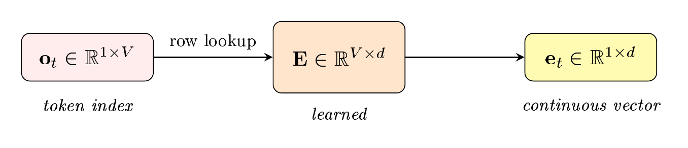
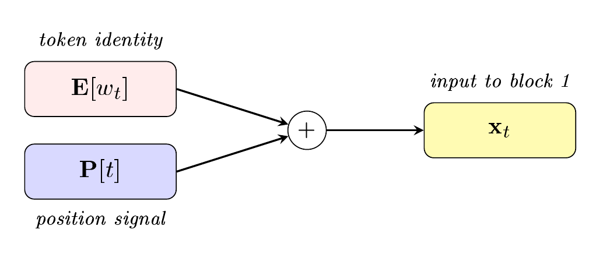
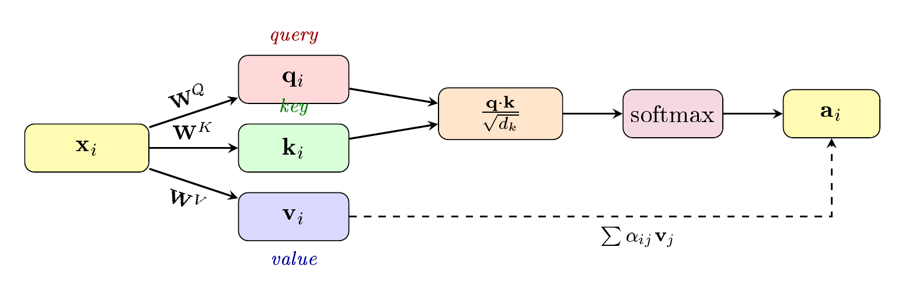
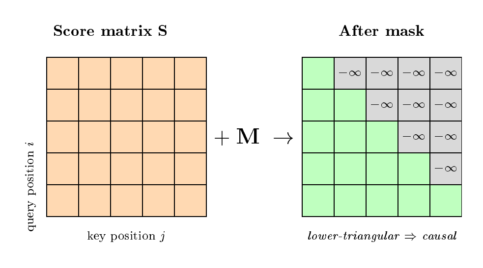
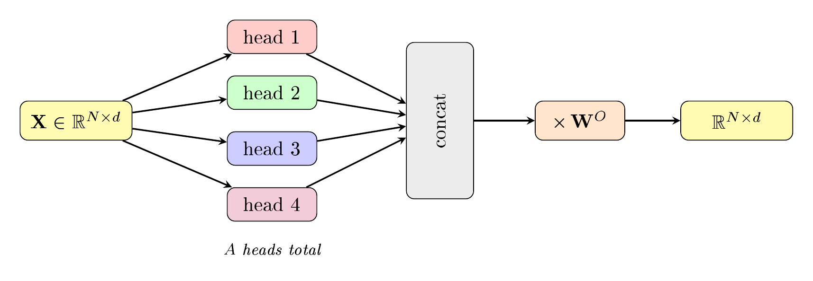
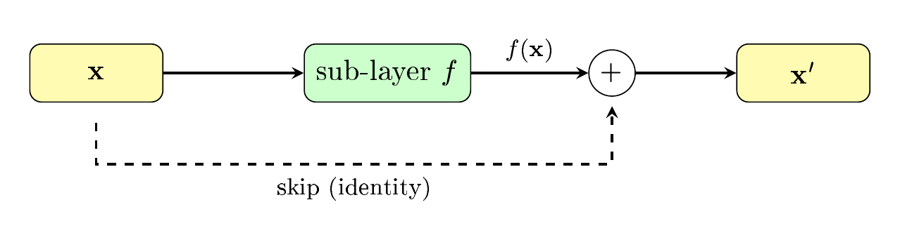
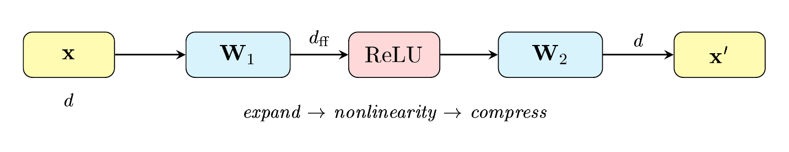
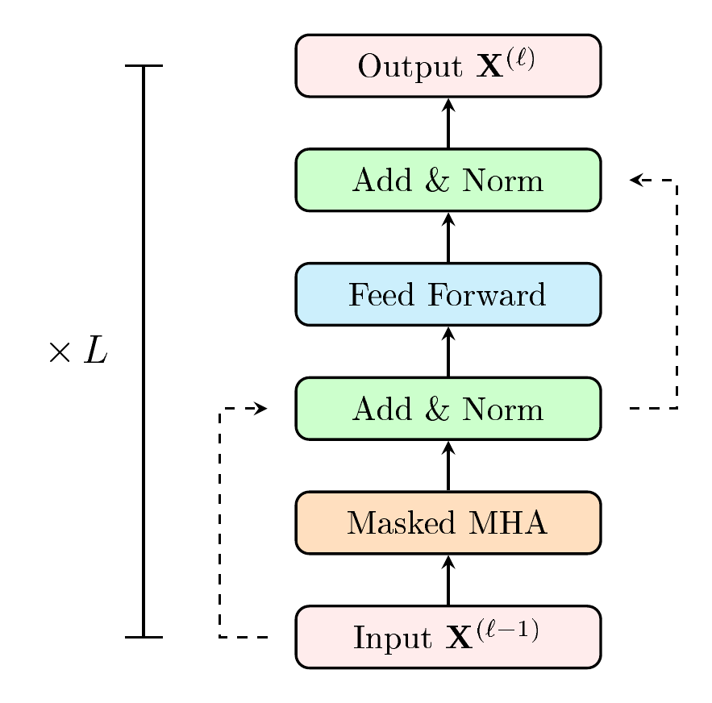
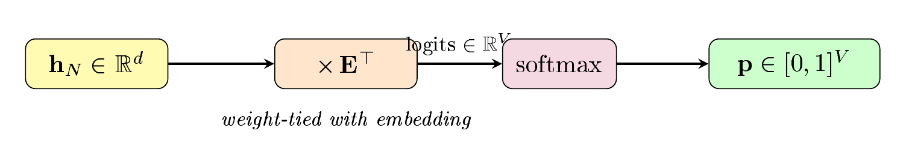

LebNet Tech Fellows — Detailed Notes
In previous chapters we built models that predict a continuous output $y \in \R$ from an input $\mathbf{x}$. Now consider the case where the input is a sequence of discrete tokens $w_1, w_2, \ldots, w_T$, each drawn from a finite vocabulary $\mathcal{V} = \{1, 2, \ldots, V\}$, and the goal is to predict the next token $w_{T+1} \in \mathcal{V}$.
By the chain rule of probability, the joint distribution of any sequence factorizes as:
$$p(w_1, w_2, \ldots, w_T) = \prod_{t=1}^{T} p(w_t \mid w_1, \ldots, w_{t-1})$$So modelling sequences reduces entirely to modelling the conditional $p(w_t \mid w_{1:t-1})$. This is called language modelling. We seek a parametric function $f_\Theta : \mathcal{V}^{*} \to [0,1]^V$ such that:
$$p(w_t \mid w_1, \ldots, w_{t-1}) \approx f_\Theta(w_1, \ldots, w_{t-1})_{\,w_t}$$where $f_\Theta(\cdot)_{w_t}$ denotes the $w_t$-th component of the output vector.
Problem. The vocabulary $\mathcal{V}$ of a typical model contains $V \approx 50{,}000$ tokens. A sequence of length $T$ lives in a space of size $V^T$; we cannot enumerate all possible contexts. The classical $N$-gram model approximates $p(w_t \mid w_{1:t-1})$ by $p(w_t \mid w_{t-N+1:t-1})$, but this destroys dependencies beyond the window of $N$ tokens.
The transformer is the architecture we use for $f_\Theta$. It maps a variable-length sequence of token indices to a probability distribution over $\mathcal{V}$, and it can attend to the entire preceding context. We derive it below, following the original architecture (Vaswani et al., 2017) component by component.
An input passes through the following stages:
| Stage | Component | Section |
|---|---|---|
| 1 | Token embedding | §2 |
| 2 | Positional encoding (added to embedding) | §3 |
| 3 | Masked multi-head attention | §4–6 |
| 4 | Add & LayerNorm | §7 |
| 5 | Feed-forward network | §8 |
| 6 | Add & LayerNorm | §7 |
| 7 | Repeat stages 3–6 $\times\, L$ | §9 |
| 8 | Final LayerNorm $\to$ Linear $\to$ Softmax | §10 |
The input to the model is an integer $w_t \in \{1, \ldots, V\}$. Integers are discrete; we cannot differentiate with respect to them. We need a continuous representation.
Let $\mathbf{E} \in \R^{V \times d}$ be the embedding matrix, where $d$ is the model dimension. The embedding of token $w_t$ is the $w_t$-th row of $\mathbf{E}$:
$$\mathbf{e}_t := \mathbf{E}[w_t] \in \R^{1 \times d}$$An equivalent viewpoint: represent the token as a one-hot vector $\mathbf{o}_t \in \R^{1 \times V}$ with a single 1 at position $w_t$ and zeros elsewhere. Then:
$$\mathbf{e}_t = \mathbf{o}_t \, \mathbf{E}$$Since $\mathbf{o}_t$ has exactly one nonzero entry, this matrix multiply reduces to a row lookup. The matrix $\mathbf{E}$ is a learned parameter: it is updated during training via backpropagation. Tokens that play similar roles in context get pushed to have similar embeddings.
For a full sequence of $N$ tokens, we stack the embeddings into a matrix:
$$\mathbf{X}_{\text{emb}} = \begin{pmatrix} \mathbf{E}[w_1] \\ \vdots \\ \mathbf{E}[w_N] \end{pmatrix} \in \R^{N \times d}$$
Token embedding as a row lookup in the learned embedding matrix $\mathbf{E}$.
The embedding $\mathbf{E}[w_t]$ depends only on the token identity, not on its position $t$ in the sequence. But position matters: “dog bites man” and “man bites dog” contain the same tokens. We need to inject positional information.
The simplest approach: define a matrix $\mathbf{P} \in \R^{N_{\max} \times d}$ where row $t$ is the positional encoding of position $t$. We add it to the token embedding:
$$\mathbf{x}_t = \mathbf{E}[w_t] + \mathbf{P}[t] \in \R^{1 \times d}$$The matrix $\mathbf{P}$ can be learned (like $\mathbf{E}$), or it can be fixed. Vaswani et al. (2017) used a deterministic sinusoidal encoding:
$$\begin{aligned} \mathbf{P}[t,\, 2k] &= \sin\!\left(\frac{t}{10000^{2k/d}}\right) \\[6pt] \mathbf{P}[t,\, 2k+1] &= \cos\!\left(\frac{t}{10000^{2k/d}}\right) \end{aligned}$$for $k = 0, 1, \ldots, d/2 - 1$. Each pair of dimensions oscillates at a different frequency, giving each position a unique signature.
The positional encoding is added, not concatenated. Both $\mathbf{E}[w_t]$ and $\mathbf{P}[t]$ have shape $[1 \times d]$, so the sum $\mathbf{x}_t$ also has shape $[1 \times d]$. This preserves the model dimension throughout the architecture.
For the full sequence:
$$\mathbf{X} = \mathbf{X}_{\text{emb}} + \mathbf{P}_{1:N} \in \R^{N \times d}$$This is the input to the first transformer block.

Token embedding $\mathbf{E}[w_t]$ and positional encoding $\mathbf{P}[t]$ are added to form the input $\mathbf{x}_t$.
The next block is Masked Multi-Head Attention. This is the core of the transformer. Before deriving the full mechanism, we motivate it.
Consider the sentence: “The chicken didn’t cross the road because it was too tired.” The word “it” refers to “chicken”. In “… because it was too wide”, it refers to “road”. To compute a useful representation of “it”, we need to look at the other tokens and determine which ones are relevant.
Goal. Given a token at position $i$ with representation $\mathbf{x}_i \in \R^{1 \times d}$, compute a new representation $\mathbf{a}_i \in \R^{1 \times d}$ that incorporates information from all preceding positions $j \leq i$.
The simplest version: take a weighted sum of the representations of all preceding tokens, where the weights reflect how relevant each token is to position $i$:
$$\mathbf{a}_i = \sum_{j \leq i} \alpha_{ij} \, \mathbf{x}_j, \qquad \alpha_{ij} \geq 0, \qquad \sum_{j \leq i} \alpha_{ij} = 1$$The constraint $j \leq i$ is the causal mask: token $i$ cannot look at future tokens, since at generation time those tokens have not been produced yet.
How should we compute $\alpha_{ij}$? A natural choice is to use the dot product as a similarity measure, then normalize with a softmax:
$$\alpha_{ij} = \frac{\exp(\mathbf{x}_i \cdot \mathbf{x}_j)}{\sum_{k \leq i} \exp(\mathbf{x}_i \cdot \mathbf{x}_k)}$$Problem. In this formulation, each $\mathbf{x}_i$ plays three roles simultaneously: the “query” (what am I looking for?), the “key” (what do I contain?), and the “value” (what information do I provide?). Conflating three distinct functions into one vector limits expressiveness.
To separate the three roles, we introduce three learned linear projections.
Given input $\mathbf{x}_i \in \R^{1 \times d}$, define:
$$\begin{aligned} \mathbf{q}_i &= \mathbf{x}_i \, \mathbf{W}^Q \in \R^{1 \times d_k} \\[4pt] \mathbf{k}_i &= \mathbf{x}_i \, \mathbf{W}^K \in \R^{1 \times d_k} \\[4pt] \mathbf{v}_i &= \mathbf{x}_i \, \mathbf{W}^V \in \R^{1 \times d_v} \end{aligned}$$where $\mathbf{W}^Q \in \R^{d \times d_k}$, $\mathbf{W}^K \in \R^{d \times d_k}$, $\mathbf{W}^V \in \R^{d \times d_v}$ are learned weight matrices.
The query $\mathbf{q}_i$ asks “what am I looking for?”. The key $\mathbf{k}_j$ answers “what do I contain?”. The value $\mathbf{v}_j$ is “what information do I provide if selected?”. Attention scores are computed between queries and keys; values are what gets summed.

Query, Key, Value projections and scaled dot-product attention.
The score between positions $i$ and $j$ is:
$$\text{score}(\mathbf{x}_i, \mathbf{x}_j) = \frac{\mathbf{q}_i \cdot \mathbf{k}_j}{\sqrt{d_k}}$$If the entries of $\mathbf{q}$ and $\mathbf{k}$ are i.i.d. with mean $0$ and variance $1$, then:
$$\E[\mathbf{q}_i \cdot \mathbf{k}_j] = 0, \qquad \Var(\mathbf{q}_i \cdot \mathbf{k}_j) = d_k$$The dot product $\mathbf{q}_i \cdot \mathbf{k}_j = \sum_{m=1}^{d_k} q_{im} k_{jm}$ is a sum of $d_k$ independent terms. By independence, $\E[q_{im} k_{jm}] = \E[q_{im}]\E[k_{jm}] = 0$. For the variance:
$$\Var(q_{im} k_{jm}) = \E[q_{im}^2 k_{jm}^2] - (\E[q_{im} k_{jm}])^2 = \E[q_{im}^2]\E[k_{jm}^2] - 0 = 1$$Summing $d_k$ such terms gives $\Var(\mathbf{q}_i \cdot \mathbf{k}_j) = d_k$. ∎
So the standard deviation of the raw dot product grows as $\sqrt{d_k}$. For large $d_k$, the dot products become large in magnitude, pushing the softmax into saturation (outputs near 0 or 1) where gradients vanish. Dividing by $\sqrt{d_k}$ normalizes the variance back to 1.
The attention weight from position $i$ to position $j$ is:
$$\alpha_{ij} = \frac{\exp\!\big(\mathbf{q}_i \cdot \mathbf{k}_j / \sqrt{d_k}\big)}{\sum_{m \leq i} \exp\!\big(\mathbf{q}_i \cdot \mathbf{k}_m / \sqrt{d_k}\big)} \qquad \forall\, j \leq i$$The attention output is the weighted sum of values:
$$\text{head}_i = \sum_{j \leq i} \alpha_{ij} \, \mathbf{v}_j \in \R^{1 \times d_v}$$Finally, we apply an output projection $\mathbf{W}^O \in \R^{d_v \times d}$ to map back to the model dimension:
$$\mathbf{a}_i = \text{head}_i \; \mathbf{W}^O \in \R^{1 \times d}$$| Object | Shape |
|---|---|
| Input $\mathbf{x}_i$ | $[1 \times d]$ |
| $\mathbf{W}^Q, \mathbf{W}^K$ | $[d \times d_k]$ |
| $\mathbf{W}^V$ | $[d \times d_v]$ |
| $\mathbf{q}_i, \mathbf{k}_j$ | $[1 \times d_k]$ |
| $\mathbf{v}_j$ | $[1 \times d_v]$ |
| $\mathbf{q}_i \cdot \mathbf{k}_j$ | scalar |
| $\alpha_{ij}$ | scalar |
| $\text{head}_i$ | $[1 \times d_v]$ |
| $\mathbf{W}^O$ | $[d_v \times d]$ |
| $\mathbf{a}_i$ | $[1 \times d]$ |
The input and output both have dimension $d$. This is by design: it means attention blocks can be stacked.
The computation above describes a single output $\mathbf{a}_i$. For all $N$ positions simultaneously, we pack the embeddings into $\mathbf{X} \in \R^{N \times d}$ and compute:
$$\mathbf{Q} = \mathbf{X}\mathbf{W}^Q, \quad \mathbf{K} = \mathbf{X}\mathbf{W}^K, \quad \mathbf{V} = \mathbf{X}\mathbf{W}^V$$All $N^2$ pairwise scores are computed in one matrix multiply:
$$\mathbf{S} = \frac{\mathbf{Q}\mathbf{K}^\top}{\sqrt{d_k}} \in \R^{N \times N}$$The entry $S_{ij}$ is the score from position $i$ to position $j$.
The matrix $\mathbf{S}$ contains scores for all pairs $(i,j)$, including $j > i$ (future tokens). To enforce causality, we add a mask matrix $\mathbf{M} \in \R^{N \times N}$:
$$M_{ij} = \begin{cases} 0 & \text{if } j \leq i \\ -\infty & \text{if } j > i \end{cases}$$Since $e^{-\infty} = 0$, the softmax zeroes out all future positions. The full masked attention is:
$$\text{Attention}(\mathbf{Q}, \mathbf{K}, \mathbf{V}) = \text{softmax}\!\left(\frac{\mathbf{Q}\mathbf{K}^\top}{\sqrt{d_k}} + \mathbf{M}\right) \mathbf{V} \in \R^{N \times d_v}$$The resulting weight matrix is lower-triangular: position $i$ attends only to positions $1, \ldots, i$.

The causal mask sets upper-triangular entries to $-\infty$, producing a lower-triangular attention pattern.
Computational cost. The product $\mathbf{Q}\mathbf{K}^\top$ costs $O(N^2 d_k)$. Attention is therefore quadratic in the sequence length $N$.
A single set of projections $(\mathbf{W}^Q, \mathbf{W}^K, \mathbf{W}^V)$ can learn one type of attention pattern. But tokens relate to each other in many ways: syntactic agreement, coreference, semantic similarity. To capture multiple types of relationships simultaneously, we use multiple heads.
Given $A$ attention heads, each head $c \in \{1, \ldots, A\}$ has its own weight matrices $\mathbf{W}^{Qc}, \mathbf{W}^{Kc}, \mathbf{W}^{Vc}$. Each head computes:
$$\text{head}^c = \text{Attention}\!\left(\mathbf{X}\mathbf{W}^{Qc},\; \mathbf{X}\mathbf{W}^{Kc},\; \mathbf{X}\mathbf{W}^{Vc}\right) \in \R^{N \times d_v}$$The heads are concatenated and projected:
$$\text{MultiHead}(\mathbf{X}) = \bigl[\text{head}^1 \;\|\; \text{head}^2 \;\|\; \cdots \;\|\; \text{head}^A\bigr] \, \mathbf{W}^O$$where $\|$ denotes concatenation along the last axis and $\mathbf{W}^O \in \R^{Ad_v \times d}$.
Shapes. Each head output is $[N \times d_v]$. Concatenating $A$ heads gives $[N \times Ad_v]$. Multiplying by $\mathbf{W}^O$ gives $[N \times d]$. It is standard to set $d_k = d_v = d/A$ so that $Ad_v = d$ and the total parameter count equals that of a single head with full dimension $d$.
In the original transformer: $d = 512$, $A = 8$, $d_k = d_v = 64$.

Multi-head attention: $A$ independent heads are concatenated and projected back to dimension $d$.
The multi-head mechanism divides the $d$-dimensional representation into $A$ subspaces of dimension $d/A$ each. Each head learns an independent attention pattern in its subspace. This is strictly more expressive than a single head, because a single head must average over all types of relationships.
The next component (appearing after each sub-layer) is “Add & Norm”. This combines two mechanisms: a residual connection and layer normalization.
Given a sub-layer function $f$ (either attention or feedforward), the residual connection is:
$$\text{output} = f(\mathbf{x}) + \mathbf{x}$$This creates a direct path for the input to flow through unchanged, while the sub-layer only needs to learn a correction. This addresses the vanishing gradient problem: the gradient of $\mathbf{x} + f(\mathbf{x})$ with respect to $\mathbf{x}$ is $\mathbf{I} + \frac{\partial f}{\partial \mathbf{x}}$, which is always at least the identity.

Residual (skip) connection: the input bypasses the sub-layer and is added to its output.
Given a vector $\mathbf{x} \in \R^d$, layer normalization (Ba et al., 2016) normalizes it to zero mean and unit variance, then applies a learned affine transformation.
Step 1. Compute the mean and standard deviation over the $d$ components of $\mathbf{x}$:
$$\begin{aligned} \mu &= \frac{1}{d} \sum_{i=1}^{d} x_i \\[6pt] \sigma &= \sqrt{\frac{1}{d} \sum_{i=1}^{d} (x_i - \mu)^2} \end{aligned}$$Step 2. Normalize and apply learned parameters $\gamma, \beta \in \R^d$:
$$\text{LayerNorm}(\mathbf{x}) = \gamma \odot \frac{\mathbf{x} - \mu}{\sigma + \epsilon} + \beta$$where $\odot$ is element-wise multiplication and $\epsilon > 0$ is a small constant for numerical stability. The parameters $\gamma$ (gain) and $\beta$ (offset) are learned during training.
Layer normalization is applied to a single token’s vector, not across the batch or across positions. It is the $z$-score from statistics, applied dimension-wise to one embedding.
In the original transformer (Vaswani et al., 2017), the order is sub-layer $\to$ add $\to$ norm (“post-norm”). Most modern implementations use the “pre-norm” variant: norm $\to$ sub-layer $\to$ add. We write the pre-norm version, since it is now standard:
$$\begin{aligned} \mathbf{z} &= \text{LayerNorm}(\mathbf{x}) \\ \mathbf{x}' &= f(\mathbf{z}) + \mathbf{x} \end{aligned}$$After the first Add & Norm, the diagram shows a Feed Forward block. This is a standard two-layer fully connected network, applied independently and identically to each token position:
$$\text{FFN}(\mathbf{x}) = \text{ReLU}(\mathbf{x}\,\mathbf{W}_1 + \mathbf{b}_1)\,\mathbf{W}_2 + \mathbf{b}_2$$where $\mathbf{W}_1 \in \R^{d \times d_{\text{ff}}}$, $\mathbf{W}_2 \in \R^{d_{\text{ff}} \times d}$, and $\text{ReLU}(z) = \max(0, z)$.
The hidden dimension $d_{\text{ff}}$ is typically $4d$. In the original transformer, $d = 512$ and $d_{\text{ff}} = 2048$.

The position-wise feed-forward network: expand to $d_{\text{ff}}$, apply ReLU, compress back to $d$.
Key point. The FFN processes each position independently: it sees only the $d$-dimensional vector at one position, with no interaction between positions. The attention layer is the only component that mixes information across positions.
After the FFN, there is another Add & Norm (the second one in each block).
The block (Masked Multi-Head Attention $\to$ Add & Norm $\to$ Feed Forward $\to$ Add & Norm) is repeated $L$ times. In pre-norm convention, one block computes:
$$\begin{aligned} \mathbf{O} &= \mathbf{X} + \text{MultiHead}\!\left(\text{LayerNorm}(\mathbf{X})\right) \\[4pt] \mathbf{H} &= \mathbf{O} + \text{FFN}\!\left(\text{LayerNorm}(\mathbf{O})\right) \end{aligned}$$The output $\mathbf{H} \in \R^{N \times d}$ has the same shape as the input $\mathbf{X} \in \R^{N \times d}$. This is what makes stacking possible: the output of block $\ell$ is the input to block $\ell + 1$.

One transformer block with residual connections, repeated $L$ times.
Typical depth: $L = 12$ for small models (GPT-2), $L = 96$ for large models (GPT-3), $L = 126$ for Llama 3.1 405B.
At the very top of the final block there is one additional LayerNorm applied to $\mathbf{X}^{(L)}$ before passing to the output stage.
The output of the last transformer block, after the final LayerNorm, is a matrix $\mathbf{H} \in \R^{N \times d}$. We take the row corresponding to the last token, $\mathbf{h}_N \in \R^{1 \times d}$, and map it to a probability distribution over the vocabulary $\mathcal{V}$.
We need to go from $\R^d \to \R^V$. A natural choice: reuse the embedding matrix $\mathbf{E} \in \R^{V \times d}$ from §2, transposed. This is called weight tying.
The logit (unnormalized score) for each token $k \in \mathcal{V}$ is:
$$u_k = \mathbf{h}_N \cdot \mathbf{E}[k]$$In matrix form:
$$\mathbf{u} = \mathbf{h}_N \, \mathbf{E}^\top \in \R^{1 \times V}$$The score for token $k$ is the dot product between the contextual representation $\mathbf{h}_N$ and the embedding of token $k$. Tokens whose embeddings are “close” to $\mathbf{h}_N$ receive high scores.

The output head: weight-tied linear projection followed by softmax.
Weight tying means $\mathbf{E}$ must simultaneously be a good input representation (mapping tokens to $\R^d$) and a good output projection (mapping $\R^d$ back to token scores). This halves the number of vocabulary-related parameters and serves as a regularizer.
The logits $\mathbf{u} \in \R^{1 \times V}$ are real-valued and unnormalized. We convert them to a probability distribution using the softmax function:
$$p(w_{N+1} = k \mid w_{1:N}) = \frac{\exp(u_k)}{\sum_{j=1}^{V} \exp(u_j)}$$This satisfies $p_k > 0$ for all $k$ and $\sum_k p_k = 1$.
Numerical stability. In practice we compute $\text{softmax}(\mathbf{u} - \max_k u_k)$. Subtracting the maximum does not change the output (the constant cancels in numerator and denominator) but prevents overflow in the exponential.
The model is trained by maximum likelihood, which is equivalent to minimizing the cross-entropy loss.
At position $t$, the model outputs a distribution $\hat{p}(\cdot \mid w_{1:t})$ over $\mathcal{V}$. The true next token is $w_{t+1}$, which defines a one-hot distribution. The cross-entropy between them is:
$$\mathcal{L}_t = -\log \hat{p}(w_{t+1} \mid w_{1:t})$$For a sequence of $T$ tokens, we average:
$$\mathcal{L} = -\frac{1}{T} \sum_{t=1}^{T} \log \hat{p}(w_{t+1} \mid w_{1:t})$$This is minimized via gradient descent (typically Adam) with backpropagation through all $L$ transformer blocks.
Key advantage over RNNs. Thanks to the causal mask, the loss at every position $t$ can be computed in parallel during training. The entire sequence is processed in a single forward pass. This is why transformers are faster to train than recurrent models, despite having quadratic attention cost.
Given a trained model and a prompt $w_{1:N}$, we generate text by repeated next-token prediction:
The sampling strategy in step 2(d) controls the quality/diversity tradeoff:
Greedy decoding: Always take $w_{t+1} = \arg\max_k p_k$. Deterministic, but repetitive.
Top-$k$ sampling: Zero out all but the $k$ most probable tokens, renormalize, and sample. When $k = 1$, this reduces to greedy decoding.
Top-$p$ (nucleus) sampling: Retain the smallest set $\mathcal{S}$ such that $\sum_{w \in \mathcal{S}} p(w) \geq p$, renormalize, and sample. This adapts the number of candidates to the shape of the distribution.
The number of non-embedding parameters per transformer block is $12\,d^2$ (assuming $d_{\text{ff}} = 4d$ and $d_k = d_v = d/A$).
The attention sub-layer has four weight matrices:
$$\underbrace{\mathbf{W}^Q, \mathbf{W}^K, \mathbf{W}^V}_{\text{each } d \times d_k \text{ per head}} \text{ and } \mathbf{W}^O$$With $A$ heads and $d_k = d/A$, each of $\mathbf{W}^Q, \mathbf{W}^K, \mathbf{W}^V$ contributes $A \cdot d \cdot (d/A) = d^2$ parameters, and $\mathbf{W}^O \in \R^{d \times d}$ contributes $d^2$. Total for attention: $4d^2$.
The FFN has $\mathbf{W}_1 \in \R^{d \times 4d}$ and $\mathbf{W}_2 \in \R^{4d \times d}$, contributing $4d^2 + 4d^2 = 8d^2$.
Total per block: $4d^2 + 8d^2 = 12d^2$. ∎
For $L$ blocks, the total non-embedding parameter count is:
$$N_{\text{params}} \approx 12\, L\, d^2$$Example. GPT-3: $L = 96$, $d = 12{,}288$. Then $12 \times 96 \times 12{,}288^2 \approx 175$ billion parameters.
Kaplan et al. (2020) showed that the loss follows a power law in model size $N$, dataset size $D$, and compute $C$:
$$\begin{aligned} \mathcal{L}(N) &\propto N^{-\alpha_N} \\[4pt] \mathcal{L}(D) &\propto D^{-\alpha_D} \\[4pt] \mathcal{L}(C) &\propto C^{-\alpha_C} \end{aligned}$$These scaling laws allow us to predict the performance of larger models from small-scale experiments.
Collecting everything, the forward pass of a decoder-only transformer language model is: